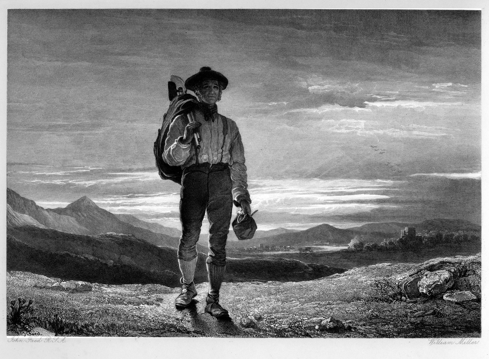
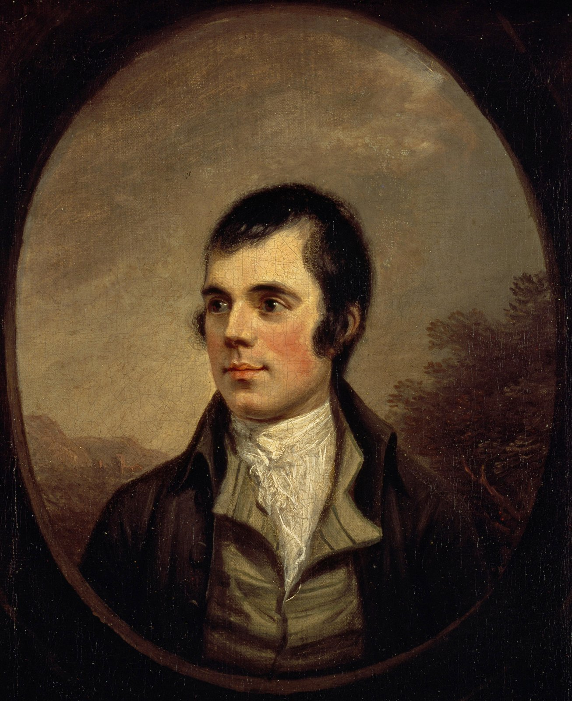

Some family inheritances are not recorded in certificates or census returns. They live in remembered words, familiar voices and stories told again and again. In our family, poetry was one of those inheritances. It belonged not only to books but to the spoken voice: to recitations, celebrations, conversations and the pleasure of knowing a verse by heart.
The poems woven through Hameward Bend range from Robert Burns to Robert W. Service and the Rubáiyát of Omar Khayyám. They reveal something of the people who loved them, and of the different places and generations through which those words travelled.
Agnes Stewart — Burns spoken aloud

The toil-worn cottar… engraving by William Miller. William Miller, Public domain, via Wikimedia Commons.

Alexander Nasmyth, Public domain, via Wikimedia Commons.
My great-great-grandmother, Agnes Stewart Lundie, born around 1854 in Ayr Ayrshire, was remembered in the family as a renowned performer of Robert Burns’s poetry. She was paid to appear at Burns Nights and suppers. This was more than a private enthusiasm: her recitations were part of a living public tradition in which poetry was performed, enjoyed and passed on.
Her daughter, Agnes Stewart Muir, was born in Kilmarnock in 1873. The family connection to Kilmarnock gives this history a special resonance, for it was there, in 1786, that Burns’s first collection of poems was published.
Burns, Kilmarnock and The Cotter’s Saturday Night
The Cotter’s Saturday Night appeared in Burns’s 1786 Kilmarnock edition, Poems, Chiefly in the Scottish Dialect. Its picture of family, home and the homeward journey stayed with me. The poem helped inspire the title Hameward Bend – A Family’s Journey Home, and two excerpts appear in the book: one as the opening epigraph and the other in the final Reflection chapter. Burns’s Tam o’ Shanter is also mentioned in the chapter ‘New Farm Loch’.
The connection between Kilmarnock, Burns and our family’s love of poetry makes the title feel less like a borrowed phrase and more like part of a long inheritance. Visitors who wish to explore further can follow the links to the poem and the story of the Kilmarnock edition.
Listen to the Poetry of Hameward Bend
A journey through the chapters and generations of the book.
To a Mouse — a familiar Ayrshire voice
Burns appears again in a very different moment in Hameward Bend. During Marjorie’s courtship with Sandy, he takes her on a picnic near the white cliffs of Dover. He recites from the Rubáiyát, and Marjorie responds playfully with the opening of Burns’s To a Mouse: “Wee, sleekit, cowrin, tim’rous beastie…”. Her Ayrshire voice is part of the exchange.
I love that moment because poetry is neither a lesson nor a formal performance. It is simply something they know, something they can offer each other, with humour and affection.
Robert W. Service — stories made for telling
Robert W. Service brought another kind of poetry into our family: rhythmic, dramatic and irresistible when spoken aloud. Falsie’s enthusiasm for Service, and especially The Cremation of Sam McGee, belongs to the family’s storytelling tradition. Its northern setting and memorable narrative also connect with the wider journeys recounted in Hameward Bend.
The Rubáiyát — poetry beyond Scotland
Sandy’s choice of the Rubáiyát of Omar Khayyám, in its familiar English rendering by Edward FitzGerald, broadens the story beyond Burns and Scottish verse. The poem is part of the couple’s conversation and of the world of reading and recitation they shared.
The Glasgow Motto
When I was a child my father taught me a rhyme about a bird, a tree, a bell and a fish, Glasgow’s motto. I tell about this in the book in chapter, The Bird that never Flew.
“Here is the bird that never flew, here is the tree that never grew, here is the bell that never rang, here is the fish that never swam.”
They are the four emblems on Glasgow’s coat of arms, and each one comes from the stories told of St Mungo, also known as Kentigern, who tradition says founded the city in the late sixth century beside the Molendinar Burn, where Glasgow Cathedral stands today.
The bird is the tame robin of St Serf, killed by jealous pupils and brought back to life by the young Mungo. The tree began as a frozen hazel branch he set alight to rekindle the monastery fire, though it is shown as an oak today. The fish is the salmon that carried a lost royal ring in its mouth, saving Queen Languoreth of Strathclyde from disgrace. The bell may have been a gift from the Pope. The original is long lost, but a bell bought in 1641 still survives.
Words that travel
Taken together, these poems tell a story of their own: Agnes Stewart performing Burns before an audience; the enduring connection between Kilmarnock and The Cotter’s Saturday Night; Mamie soaking up the words of Robert Service from her dear old friend, Falsie. Marjorie and Sandy trading remembered lines; Falsie passing on a love of Robert W. Service and Peter McCann reciting St Mungo’s Glasgow Motto.
The words have travelled through places, generations and lives. A way of remembering not only the poets, but the people who gave their poems a place in our family.